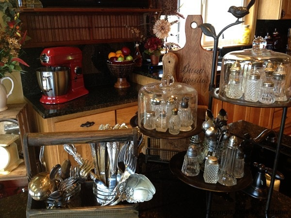
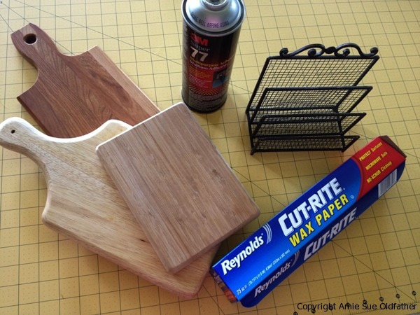
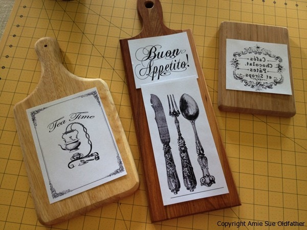
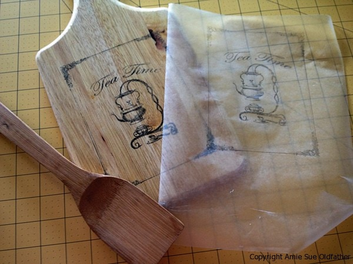
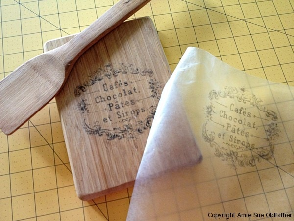
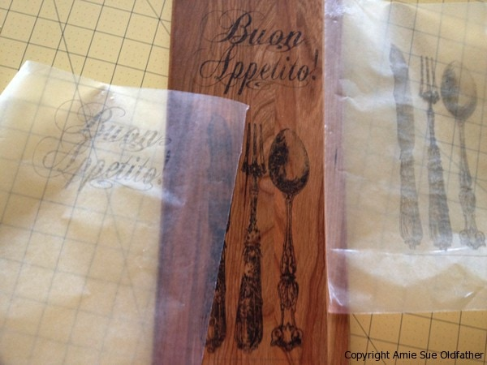
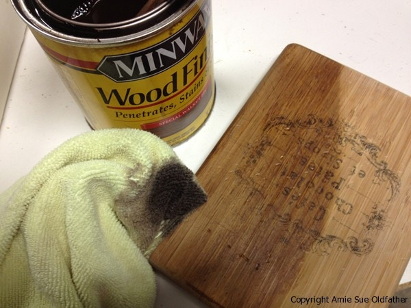
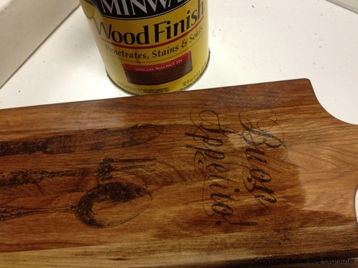
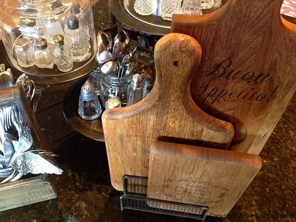
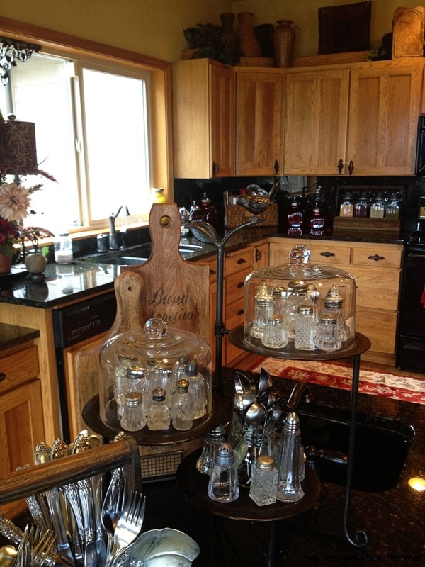

Creating FOR the Kitchen not IN the kitchen

I hope you don’t mind, but I want to share yet another passion of mine with you … arts & crafts. I am equally as passionate about interior design as I am about creating healthy foods.
I am not too sure what my style is; Tuscan, sophisticated flea-market, farmhouse, rustic (but not too rustic), vintage… hmm, I guess when you boil it all down, I’m rather eclectic. My primary goal is to create a home that is warm and welcoming. One that says, “Come on in! Grab a drink out of the fridge (raw treat if so inclined) and kick your feet up on the coffee table as we relax together.”
As much as I love vintage and antiques, it is not always easy to find exactly what I have envisioned, so when that happens, I do my dandiest to make it myself! So I thought I would share with you a project that I did today. I hope it inspires you as well! Today’s project started in the kitchen with the wax paper, then I moved to my craft room for the printer and creation, then to the garage for staining, then back to the kitchen for decorating. I made a full circle. :) My objective today… vintage cutting boards! Or as close to them as I could get with the supplies on hand.
This is what you will need:
- Computer and graphics
- Printer (inkjet only)
- Card stock paper (1 sheet)
- Wax paper
- Adhesive spray
- Spatula or credit card (don’t worry, we won’t be charging anything on it haha)
- Cutting board
- Stain
This is what I did.
And this is how I did it!… The bottom two cutting boards were purchased at Home Goods for $4.99 each. The top cutting board was in my cabinet. The black stand is a file holder that I got for $3.99. This will be used in my end display. Notice that all the cutting boards have different grains and colors in the wood. That will help the grouping look like it was collected over time and not all bought at the same time. I hope that makes sense. :)

I selected the graphics that I wanted to use and then printed them out on plain paper for a trial run. I wanted to make sure that the sizing was right and that I would like the over-all look.

I don’t have exact step by step pictures. You have to move somewhat quick and carefully for the next process, and I couldn’t juggle my iPhone camera at the same time. So, let me explain what I did next. I took my card stock paper (the kind you use for card making or scrapbooking) and sprayed lightly, a strip across the top and bottom of the paper.
Hint: you can use the same piece of card stock over and over, just need to reapply the spray adhesive each time. I placed a piece of wax paper on the card stock and smoothed it out. Make sure the waxy side is facing out. Trim the excess wax paper that is hanging over the edges. Place this in the printer. I faced my sheet wax paper side down because that is how my printer draws it up. I want to print on the wax paper. If you have any print on your image you want to “mirror” it before printing; otherwise, it will be backward.
After it prints, carefully peel the wax paper off of the card stock. Be careful because the ink is wet and will smear. Gently place the wax paper, ink side down, onto your cutting board and press down. DO NOT move the wax paper as it will smear. Using your spatula or credit card, be steady and firmly press the image into the cutting board. If your wood has any grooves in it or is pitted, it will leave voids. That’s ok; it will give it that aged appearance. After running over the complete image, carefully remove the wax paper. Ta-da! Again, it doesn’t look “perfect”, but I don’t want it to anyway. I want it to look worn.


The cutting board below is longer than a standard piece of paper, so I had to do the image on 2 pieces of paper.

After all my transfers had been completed, it was time to head out to the garage. The two cutting boards that I had bought still looked a tad too new for my overall aged look, so I took a piece of chain and gave them a good spanking. I then stained the boards. I used Special Walnut as my color of choice. Each piece took on a different color due to the wood it was made from. The stain helps to marry the image and wood, giving it that vintage look. I took a few snapshots just to show the difference the stain made in the wood color.


You could vanish it as the last step, but I didn’t. Here is the end product.
This is how I displayed them on my kitchen island. It’s hard to see the top 2 cutting board graphics due to the camera angle.


Well, that about sums it up. This was the first time doing this on cutting boards, and I tell ya what… I will be looking for used boards at second-hand stores from now on! The more banged up and used, the better. Haha Right now, my decorating fetishes are:
Old cutting boards
Antique rolling pins
Vintage crates
Antique wooden shutters
Antique salt and pepper shakers
And anything else that strikes my fancy! lol
What are you passionate about? I would love for you to share!
Many blessings, amie sue
© AmieSue.com